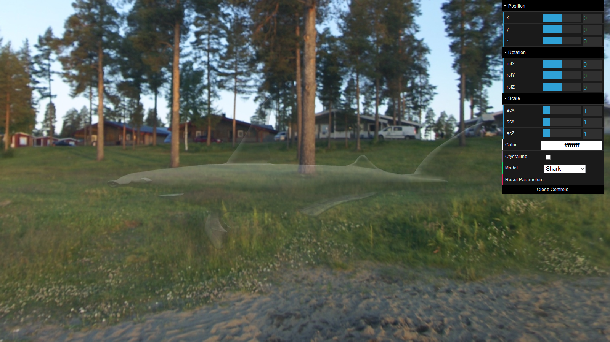
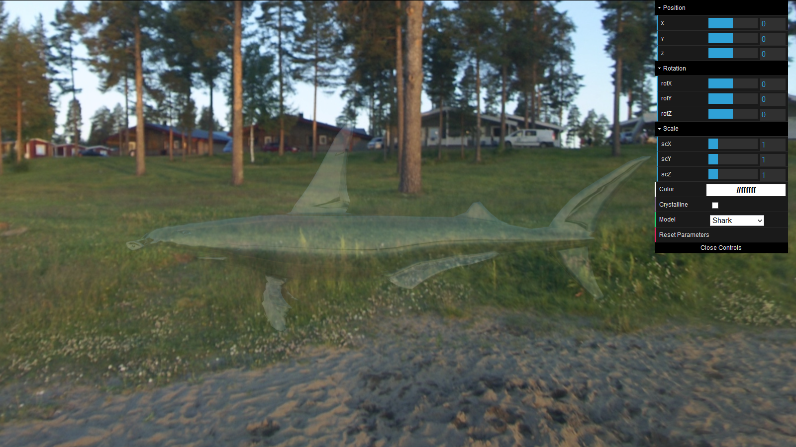
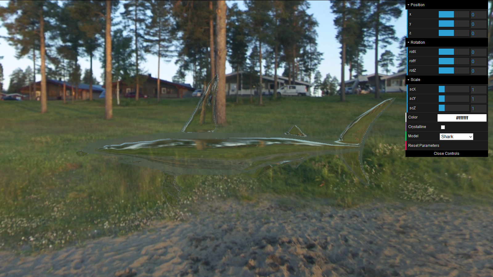
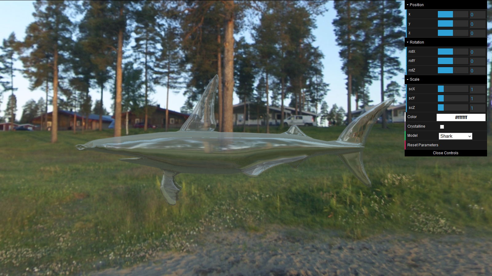
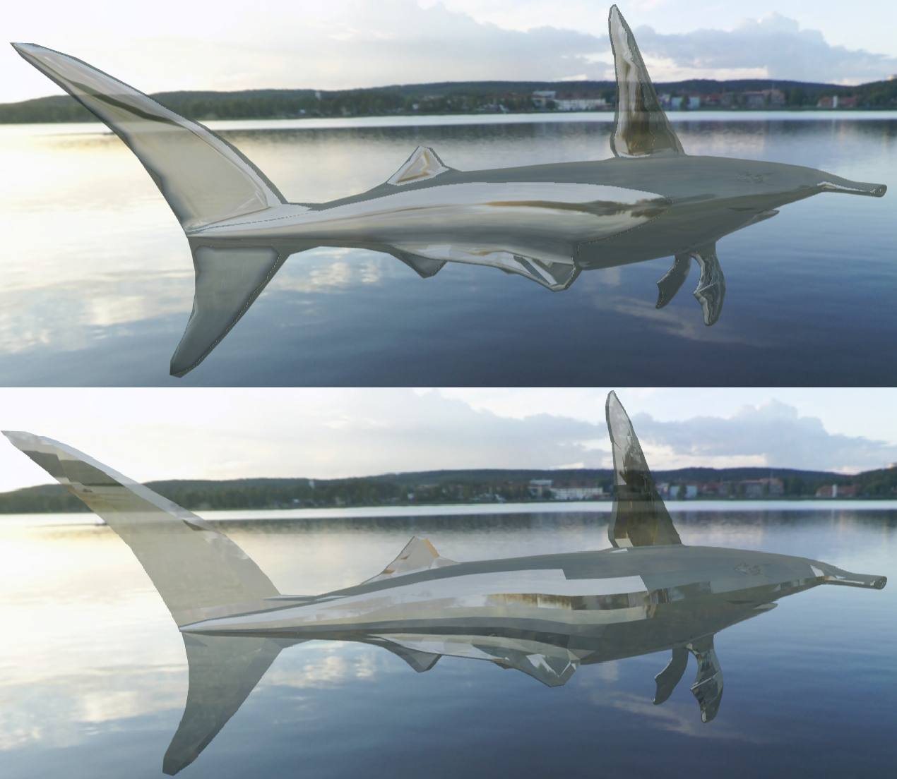
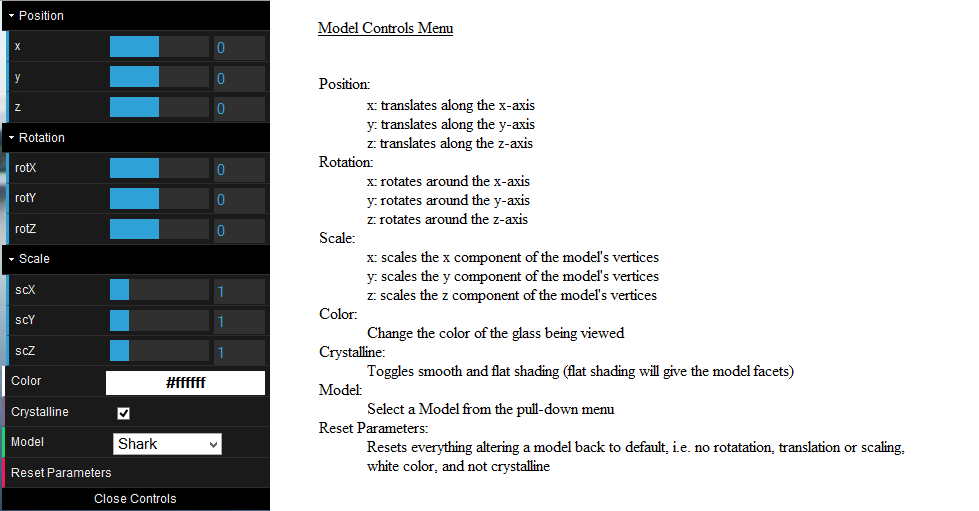
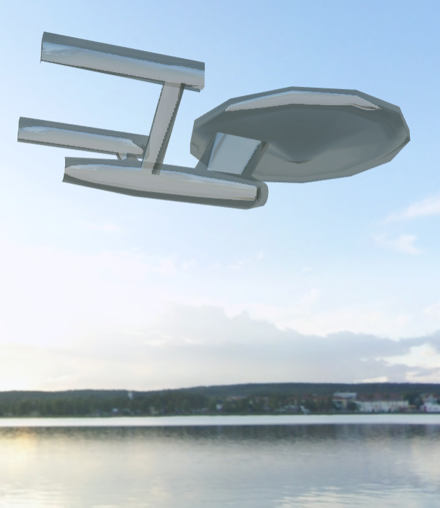

Glass Solid Viewer
We created an application that accurately depicts a glass material on a number of different models.
This includes correct diffuse/specular lighting for
transparent materials, as well as the reflection and refraction that are indicative of glass.
*This application uses the three.js library created by Ricardo Cabello.*
*Visit his website at threejs.org/.*
Details: Components of the Glass Solid Viewer
Geometries
Each object is made of a number of vertices connected into polygons.These are the models we use in this application.
__________________________________________________
The Model Loader
In order to get each model into the viewer, we created a model loader.In implementation, this is a model class that takes in a poly and coord file and converts them to a three.js geometry.
(The coord file contains a list of all of the vertices in a model, and the poly file specifies how the vertices are connected together).
Once the geometry has been loaded, the loader dynamically finds the center of the model by finding the largest and smallest x, y, and z value.
It takes the difference of the x's, y's and z's and translates this point to the origin of the scene.
Similarly, it dynamically scales objects into the scene by finding the largest of the all of the vertices' components.
It then takes this value and finds out how much this component must be scaled to reach a desired size (in our case 30 in any direction), then scales all other components by this value as well.
__________________________________________________
Lighting
In order to see a model, there needs to be some source of light.We used three.js to define a both an overhead point light and an ambient light for our scene.
The point light was defined with a white color, and was intended to simulate the light of the sun.
Because point lights only shine from a certain direction, this is the light that makes your eventual specular lighting.
The ambient light was defined as a light grey color (so it didn't overwhelm the point light), and was intended to simulate light bouncing off of the scene itself.
__________________________________________________
Skybox
The skybox is used to create the backgound for the scene.In order to make one, we created a cube geometry and texture-mapped a skybox texture to the inside faces of it.
This creates a seamless panorma-like background.
__________________________________________________
The Glass Material (the Exciting Bit)
The material is what covers each geometry and makes it look like it's made of glass.In order to create an accurate glass material, three things need to be working in unison: the model material, the reflection, and the refraction.
We created three different materials for each model in order to capture all three of these things.
Model Material
The model material is where diffuse and specular lighting are handled, as well as glass color and transparency.For this, we used a semi-transparent phong material from the three.js library.
This calculated the color that the model should display per pixel, while taking into account material color, lighting color (for diffuse and specular shading), and camera position (for specular shading).
One problem we ran into was that the built-in depth buffer for three.js was deleting the back faces for this material (which we needed because the material was transparent).
This was fixed by turning this feature off.
Just the model material.

Reflection Material
In order to implement reflection, we used another three.js phong material, and then used three.js' built-in reflection cube functionality.This allowed us to use our skybox's texture to calculate reflection vectors for each pixel of the model, and the color that each pixel picks up from the environment from reflection.
Just the reflection material.

Refraction Material
Similar to the method used for reflection, we used the refraction cube functionality to map the environment to our model.This allowed us to calculate the refraction vectors for each pixel of the model, and the color that each pixel gets from the environment as a result of refraction.
Just the refraction material.

Finally, we combined all three materials to get the glass material.
To do this, the colors for all three materials were blended together using three.js' meshMixed functionality.
The final result.

__________________________________________________
Camera
Our camera was an orthographic camera created using three.js functionality and controlled using the three.js plugin, OrbitControls.This allowed our camera to zoom in or out with the mouse wheel by changing its position along the vector drawn from its viweing angle.
It also allowed us to pan in all directions using a right-click and drag by moving the camera along the opposite vector from the mouse drag.
Finally, it allowed for rotation using a left-click and drag by rotating around the center of the scene.
__________________________________________________
Menu
Finally we decided to create a menu for our application that allowed for alterations to the models themselves.To do this, we used the framework from dat.gui, and allowed users the ability to translate, rotate and scale models, as well as change material color, change whether models were crystalline or not, and change the model.
Functionality
The position sliders change the model's position in the scene.This was achieved by applying a translation matrix to the model's geometry based on the sliders' states.
The rotation sliders define a rotation matrix that is used to rotate the model in the scene.
The scaling sliders' values are used to create a scaling matrix that is used to alter the model's geometry.
Changing the color in the menu alters the color of the model material (not the reflection/refraction material) that is used create the glass material.
The crystalline checkbox toggles between smooth and flat shading (flat shading gives the models pretty facets).
Difference between crystalline and not.

The model pull-down allows the user to change models by swapping out the geometry of a previous model with a new one.
It also resets the previous values in the menu before doing so.
The reset button simply returns the menu to its default position, rotation, scaling, color, and shading.
__________________________________________________
Those were the all of the components of the Glass Solid Viewer, and a brief description of their implementations.
User Guide
User Features:
View glass solids on a fully-rendered display.Toggle through different preset glass models.
Interact with the application to rotate, scale and translate the models.
Full 360 degrees of camera rotation.
Camera zoom and panning.
Change the color of each glass model.
Display each model as smooth or crystalline.
__________________________________________________
How to Run:
Please Note: This application works in Firefox Only!
Click Here.
__________________________________________________
Camera Controls
Left-click and drag to rotate the camera around the scene.
Middle-mouse scroll to zoom the camera.
Right-click and drag to pan the camera.
__________________________________________________

__________________________________________________
Sample Output




References:
Properties of Glass (the optical properties are the important bit): http://www.saint-gobain-sekurit.com/glazingcatalouge/glass-properties#a3
Calculating Glass Properties: http://en.wikipedia.org/wiki/Calculation_of_glass_properties
Tutorial on the Using the Depth Buffer and Transparency: http://learningwebgl.com/blog/?p=859